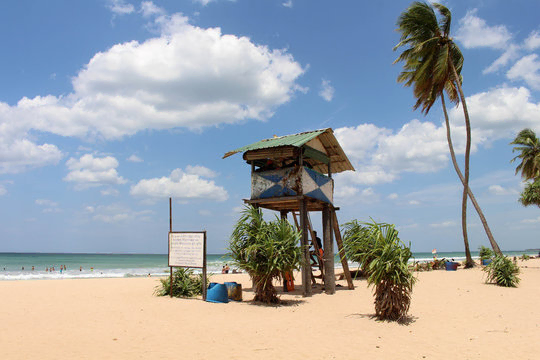
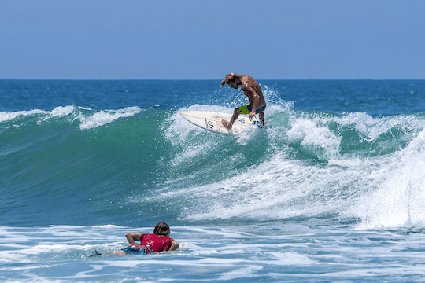
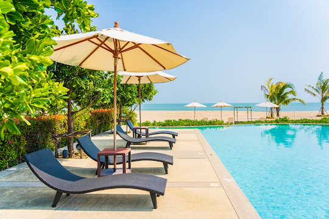

Nilaveli
May to September is the best time for beachin’ it up on the east coast of Sri Lanka, and if your trip falls at this time of year you won’t want to miss a visit to Nilaveli. Only a short boat ride from Pigeon Island, a national park where you can snorkel with reef sharks, Nilaveli is all stretches of white sand and unspoilt views of the Indian Ocean. After a hard day of tropical snorkeling, it’s not far to Trincomalee, a large harborside town, where you can enjoy Sri Lankan cuisine and fresh seafood to refuel.
Arugam Bay
This internationally renowned surfers' paradise is packed with people riding the waves from April to October every year. Arugam Bay Beach, on Sri Lanka’s beautiful west coast, is a diverse surf spot that caters for a variety of experience levels, which accounts for some of its popularity. While the waves can reach as high as 10 meters, the inner bay is well protected and lined with hotels and restaurants, so it’s a great place for non-surfers to visit too.
Negombo
If you’re looking for a beach getaway but only have a quick stopover in Colombo, Negombo is the closest beach option for you, located only 10 kilometers from the airport. Peak season is during December and April and, due to the proximity to the capital, it can get pretty crowded. It’s not the most pristine water you’ll find in Sri Lanka, but if you’re hot and in need of a swim, it’s definitely better than missing out entirely.